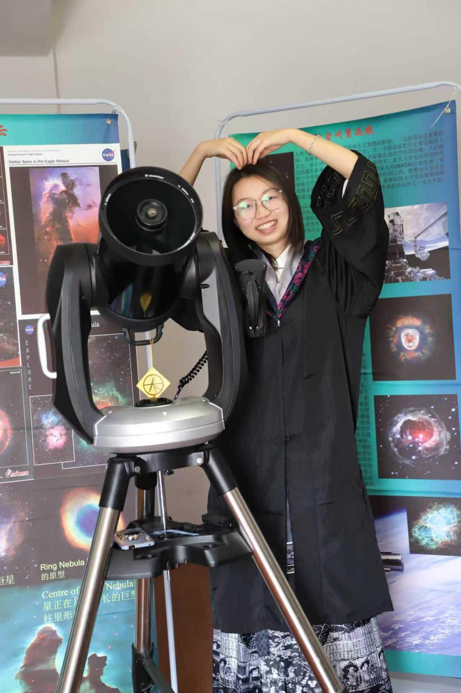
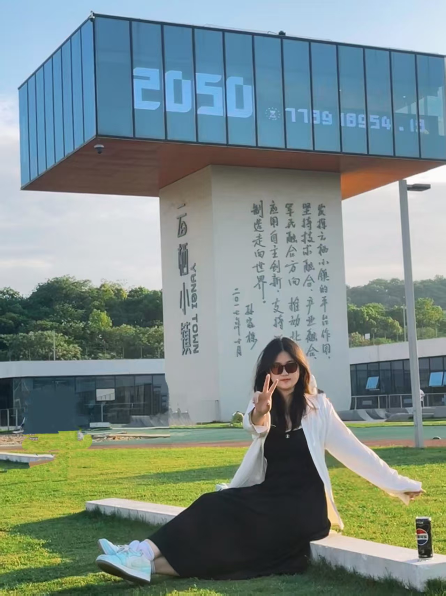
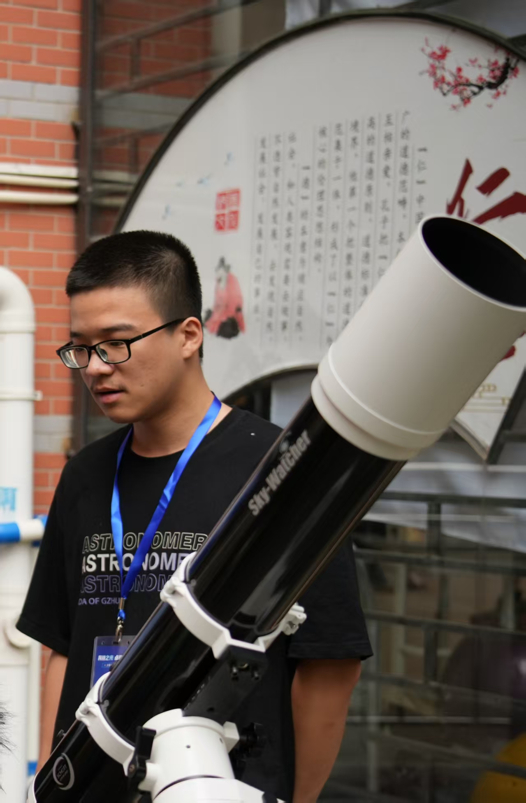

RADIO LAB GZHU
Embarking on a journey to unravel the universe’s most enigmatic whispers, the Radio Astronomy Lab at Guangzhou University is a dynamic hub of cutting-edge research and technological innovation. Led by the bright and driven young radio astronomer, Professor Rui Luo, our lab is dedicated to pushing the frontiers of our understanding of the cosmos through the powerful lens of radio waves.
Our lab’s research portfolio is broad and ambitious, encompassing several key areas:
Fast Radio Bursts (FRBs): At the core of our work, we are intensely focused on understanding the nature, distribution, and astrophysical implications of FRBs, seeking to unlock the secrets behind these powerful cosmic signals. Pulsars: We investigate these highly magnetized, rapidly rotating neutron stars, exploring their emission mechanisms, their role in fundamental physics, and their potential as cosmic clocks. Radio Frequency Interference (RFI): As radio telescopes become more sensitive, mitigating human-generated radio noise is paramount. Our team works on sophisticated techniques to identify, characterize, and remove RFI, ensuring the integrity of our astronomical observations. AI-Related Data Science: The sheer volume and complexity of modern radio astronomy data demand advanced analytical tools. We leverage cutting-edge artificial intelligence and machine learning algorithms for data processing, source detection, signal classification, and uncovering subtle patterns in vast datasets. Radio Instrumentation: Innovation in telescope design and detector technology is crucial. We are involved in developing and enhancing the hardware and software that power our radio astronomy observations, pushing the boundaries of sensitivity and observational capabilities. At the Radio Astronomy Lab, we foster a collaborative and stimulating environment where aspiring scientists can engage in meaningful research, contribute to groundbreaking discoveries, and develop the skills needed to shape the future of radio astronomy. We invite you to explore the universe with us, one radio wave at a time.
Members



